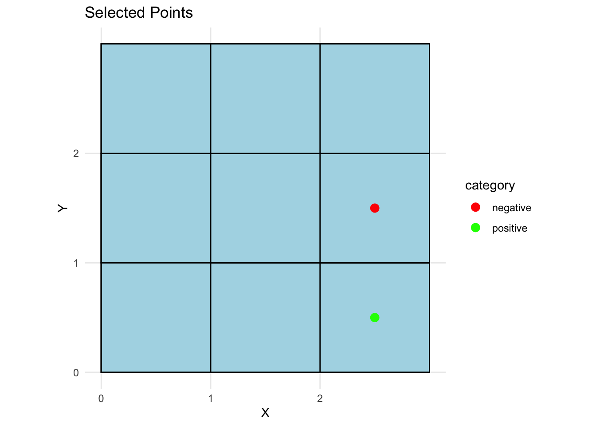

library(here) # for reproducible file referencinglibrary(tidyverse) # data wrangling and plottinglibrary(ggpubr) # for arranging ggplots with shared legends# Load helper functions for rectangle inference modelssource(here("helper-functions.R"))
Maincode’s mission is to build AI that does not automate human cognition, but augments it. To achieve this mission, you need to build systems that allow people to both: 1) make the most of the strengths that different AI systems offer, and 2) transparently evaluate the extent to which they should rely on AI in a given context. AI can also be improved by integrating what we know about how people learn efficiently from other agents, and how they use these agents to help make decisions.
A serious problem with most popular AI models is that they are often overconfident and lack any mechanism to allow users to evaluate the true confidence of the model. AI models also tend to be unable to explicitly work with their users to accurately calibrate the extent to which users rely on their recommendations.
Most AI is also generally much less efficient than humans at learning, requiring vastly more data. Cognitive science has developed models that help us understand how people learn efficiently from other agents, and how they use these agents to make better decisions. These models can improve AI systems by allowing them to make assumptions about how data is generated, and track the mental states of the user relying on their recommendations, ensuring their reliance is well calibrated with uncertainty.
I am not an engineer — you know this, so hopefully it is no surprise when I say that my expertise is not in the most efficient or effective ways to implement these systems. But what I do understand is human cognition. Specifically, I have a deep understanding of how and why people rely on other agents, like AI, to facilitate their decision-making. What I’m going to describe here is a potential solution to a serious problem I see in modern AI systems related to helping people accurately and efficiently learn from (and with) AI agents.
In this demo, I’ll show you an application of what are called Bayesian theory of mind models. These models are powerful because they explain how, by learning from other agents, people are able to learn far more efficiently than even the best AI models (the amount of data an LLM is trained on is astronomically higher than what any human will see in their lifetime). I will demonstrate these models on an inductive learning task: a task where the agent learns from examples to infer some category or concept. For simplicity, I assume you have some basic understanding of Bayesian inference, but you can look at the introduction of my paper for a detailed overview.
The scenario I’ll demonstrate is this: imagine you’re playing a game where you guess the size and location of a rectangular area given some clues provided by someone. The AI in this scenario also has access to the same clues and uses a Bayesian model to infer the most likely rectangle, depending on how competent and helpful it believes the clue-giver (informant) is. The model can provide its recommendation, describe the uncertainty of its predictions, and help the human judge whether they are relying appropriately on both the AI’s recommendations and the informant’s clues.
This basic inference game can easily be scaled to a number of real-world decision-making scenarios:
Military surveillance: A spy shares sightings of enemy equipment at a few points on a grid. The analyst must infer the enemy base location based on these clues. The scout could be reliable and helpful, or unreliable and misleading (e.g., compromised).
Power outage mapping: An analyst tries to guess which area of a city has lost power. They receive a few addresses from someone monitoring citizen reports, and infer the whole outage area based on these few reports. The reports could be from a helpful informant deliberately choosing useful reports, or from an unreliable informant choosing reports at random.
Environmental hazard detection: A team tries to identify a contamination zone in a forest based on sensor readings from a few locations. The analyst must infer the extent of contamination based on these readings, which may be chosen in various ways affecting inference.
Crime scene analysis: A detective receives witness reports of suspicious activity at various neighborhood locations. They need to infer the crime area based on these reports. If witness reports are unreliable or spurious, the detective’s inference will be affected compared to if the reports are reliable.
And many more. The point is that the model can be used to help people make decisions in a wide range of scenarios where they need to infer some hidden structure from a few clues, and where the trustworthiness of the informant is uncertain but can be inferred.
The goal of this demo is to offer very preliminary insight into how models developed in cognitive science to understand how people learn and decide efficiently and (in most cases) accurately, can be used to both make AI systems learn better, by allowing them to make assumptions about how data is generated, as well as track the mental states and behavior of the user/analyst.
Scenario: program the model’s inference based on intel about the informant
In this scenario, we assume have information that allows us to infer how much to trust the informant, which we can program into the model. In practice, this could be derived from the informant’s track record of providing reliable data, their qualifications, conflicts of interests (or lack thereof), just to name a few.
Setup Hypothesis Space
We begin by defining a simple 2D grid and generating all possible rectangular hypotheses. Each hypothesis corresponds to a possible hidden area that an informant might be trying to convey.
Show code
# Define grid size (H) and create 2D grid points for hypotheses and observation pointsH <-3x <-0:Hy <-0:Hpts_x <-seq(0.5, H -0.5, 1)pts_y <- pts_xpts <-expand.grid(x = pts_x, y = pts_y)# Generate all possible rectangular hypotheses with bordershyp <-makeBorders(x, y)# Initialize uniform prior probability for each hypothesis -- this could be tweaked for different scenarioshyp$prior <-rep(0.1, nrow(hyp))# Assign unique rectangle IDs for trackinghyp$rect_id <-rownames(hyp)# Extract only border coordinates for easier plotting/processingjustHyp <- hyp[, 1:4]
Plot all possible hypotheses
This plot shows the full hypothesis space — all possible areas that the informant could be trying to convey in the grid.
Show code
# Plot the entire hypothesis space to visualize all possible rectanglesplotEmptyHypotheses(hyp)
Step 1: Define how much the model should trust the informant
The model I will demonstrate has a single parameter, alpha, which defines how much it trusts an informant. An alpha < 0 means the model assumes the informant is trying to minimise belief in the true hypothesis. That is, to systematically mislead the model/analyst. An alpha > 0 means the informant is trying to maximise belief in the true hypothesis (i.e., be helpful). An alpha = 0 means that clues are being chosen at random (they are unreliable). In theory, it would be easy to develop a system that learns the appropriate alpha value from interacting with an informant over time, but that will not be the focus of this demo.
I’ll define three kinds of possible informants. Helpful but unreliable (alpha = 0.1), helpful & reliable (alpha = 2), and completely misleading (alpha = -2).
Step 2: The model calculates how probable it is that a learner would choose different points for each possible hypothesis.
The informant can choose two kinds of clues: “positive” points inside the true rectangle, and “negative” points outside it. The model calculates the likelihood of each point for each possible rectangle based on a statistical rule favoring smaller rectangles consistent with positive points in helpful contexts, and larger rectangles consistent with negative points. For full details, see my paper linked earlier.
Show code
all_likelihoods <-list()all_plots <-list()for (informant innames(informants)) { alpha <- informants[informant] likelihoods <-compute_likelihoods_for_informant(hyp, pts, alpha) all_likelihoods[[informant]] <- likelihoods plot <-plotMultiplePointPosteriors(hyp, likelihoods$positive, yrange =0:H, xrange =0:H) plot <-annotate_figure(plot, top =paste0("Probability that an informant would choose different points in the grid assuming the informant is: ", informant)) all_plots[[informant]] <- plot}
Now we’ll simulate how different informants provide clues and how the model updates its beliefs.
Step 3: The informant provides clues
Show code
# Select 2 random points as clues from the grid for the demoset.seed(123)new_pts <-samplePoint(pts)new_pts
index x y category
3 3 2.5 0.5 positive
6 6 2.5 1.5 negative
Show code
# Visualize the selected clues on the grid with positive/negative coloringggplot() +geom_rect(data = hyp, fill ="lightblue", color ="black", alpha =0.7,aes(xmin = x1, xmax = x2, ymin = y1, ymax = y2)) +geom_point(data = new_pts, aes(x = x, y = y, color = category), size =3) +scale_x_continuous(breaks =0:2, minor_breaks =0:2) +scale_y_continuous(breaks =0:2, minor_breaks =0:2) +scale_color_manual(values =c("positive"="green", "negative"="red")) +coord_fixed() +theme_minimal() +labs(title ="Selected Points", x ="X", y ="Y")
For simplicity, assume the informant cannot lie (as detailed in my paper, this is often a realistic assumption). This means the rectangles consistent with the clues are the only possible true rectangles.
Step 4: Model updates its beliefs based on the clues
Now that we have the clues, we can update the model’s beliefs about the true rectangle. The model will calculate the posterior probabilities of each hypothesis given the clues it has seen and how much it trusts the informant.
Show code
# Update posterior hypothesis distribution given clues and informant likelihoodsupdated_hypotheses_list <-list()plots_list <-list()for (informant innames(all_likelihoods)) { likelihoods <- all_likelihoods[[informant]] updated_hypotheses <-getHypDist(new_pts, likelihoods, hyp) updated_hypotheses_list[[informant]] <- updated_hypotheses plots_list[[informant]] <-plotEmptyHypotheses(updated_hypotheses, new_pts)}# Display the first informant's updated posterior plotplots_list[[1]]

Assuming that the analyst is not lying, these are the only hypotheses that are consistent with the clues. The model’s job now is to figure out which is most likely given how much it trusts the informant.
Show code
plot_colours <-c(helpful ="darkgreen", unreliable ="orange", misleading ="red")chance <-1/nrow(updated_hypotheses)for (informant innames(updated_hypotheses_list)) { updated_hypotheses <- updated_hypotheses_list[[informant]]print(plot_posterior_probabilities( updated_hypotheses,color = plot_colours[informant],title =paste0(" Probabilities of hypotheses assuming the informant is **", informant, "**") ) ) rec <-get_recommendation_and_confidence(updated_hypotheses)print(paste0("Assuming the informant is: ", informant))print("Recommended rectangle (most probable):")print(rec$rectangle)print("Confidence score:")print(rec$confidence)}
[1] "Assuming the informant is: helpful"
[1] "Recommended rectangle (most probable):"
[1] "h6"
[1] "Confidence score:"
[1] 0.3228082
[1] "Assuming the informant is: unreliable"
[1] "Recommended rectangle (most probable):"
[1] "h6"
[1] "Confidence score:"
[1] 0.0153802
[1] "Assuming the informant is: misleading"
[1] "Recommended rectangle (most probable):"
[1] "h4"
[1] "Confidence score:"
[1] 0.2214612
The above plots show a few things. First, they show how the model can adjust its inferences based on what we tell it about the informant: in this case, how much it should trust the clues it gives. This is very useful, because it allows the model to calibrate the efficiency with which it learns from someone based on what it knows about the informant, much like how humans do. This facilitates a vastly superior human-AI interaction, because in contexts where you have highly proficient and trustworthy informants, the model can learn much faster and more efficiently than it otherwise would. However, it can also adjust to situations where this is not the case, such as when the informant is basically just guessing, or if they may be systematically trying to mislead the analyst.
Second the plots show us how, using these models, we can get not just a recommendation for what the most likely hypothesis is, but also how confident the model is about that recomendation. This is a key strength of Bayesian inference, as it naturally calculates the probability of every choice alternative, therefore providing the analyst more information to make their own inference.
Step 5: Analyst makes their own inference based on the clue
Another advantage of this type of models is that it can not only make recommendations to a human analyst, but it can also monitor the analyst’s decisions and give feedback on the quality of their inferences. Let’s examine such a scenario, specifically, one where the model severely over-trusts the informant based on the informant’s actual reliability:
Show code
# model analyst guess assuming a particular alpha. Let's first assume that they are overly trusting: analyst_trust <-3analyst <-"trusting"# The analyst uses their own trust parameter to compute likelihoodsanalyst_likelihoods <-list("positive"=findProbabilityOfPoints(hyp, pts, "pos", alpha = analyst_trust),"negative"=findProbabilityOfPoints(hyp, pts, "neg", alpha = analyst_trust))analyst_likelihoods$positive <-data.matrix(analyst_likelihoods$positive /sum(analyst_likelihoods$positive))analyst_likelihoods$negative <-data.matrix(analyst_likelihoods$negative /sum(analyst_likelihoods$negative))# Analyst updates their beliefs based on the cluesanalyst_hypotheses <-getHypDist(new_pts, analyst_likelihoods, hyp)# Show analyst's recommended rectangle and confidenceanalyst_recommended <- analyst_hypotheses[which.max(analyst_hypotheses$posterior), ]print(paste0("Analyst's choice: ", rownames(analyst_recommended)))
# Compare and provide feedbackif (analyst_rec$rectangle == model_rec$rectangle) {print("Analyst's guess matches the model's recommendation.")} else {print("Analyst's guess does NOT match the model's recommendation.")}
[1] "Analyst's guess matches the model's recommendation."
Show code
calibration_gap <-abs( analyst_hypotheses[analyst_rec$rectangle, "posterior"] - model_hypotheses[model_rec$rectangle, "posterior"])print(paste0("Calibration gap (difference in confidence): ", round(calibration_gap, 3)))
[1] "Calibration gap (difference in confidence): 0.404"
Show code
if (analyst_rec$confidence > model_rec$confidence) {print("Analyst may be overconfident given the actual informant reliability.")} elseif (analyst_rec$confidence < model_rec$confidence) {print("Analyst may be underconfident given the actual informant reliability.")} else {print("Analyst's confidence is well calibrated with the model's estimate.")}
[1] "Analyst may be overconfident given the actual informant reliability."
Discussion
This kind of system would be especially powerful over repeated interactions, where informants and models can mutually adapt. Informants could learn to calibrate their cues to be more helpful, while the model could adjust its output to ensure that the human analyst is interpreting and relying on its recommendations appropriately.
In the demonstration above, informant reliability is hard-coded into the model. While this is a simplification, it reflects a common real-world constraint: in many reasoning scenarios, we cannot directly verify the ground truth after an informant provides a recommendation. In such cases, it’s valuable for a model to be able to make probabilistic inferences based on prior assumptions about the informant’s trustworthiness.
However, a more robust system would go further. Rather than fixing informant reliability, the model could be initialized with a prior belief (e.g., assuming low reliability by default) and update this belief over time as more data becomes available. This would allow the system to dynamically adapt to the actual reliability of each informant. Crucially, this kind of learning and adaptation is a natural fit for the modeling framework used here—one that supports both principled inference and efficient learning under uncertainty.
Looking forward, there are exciting opportunities to extend this approach beyond the demo context and apply it to real-world decision-making environments. At a company like Maincode, this framework could be developed into powerful AI tools that work in tandem with human users—helping analysts, operators, or domain experts interpret ambiguous data, weigh competing sources of information, and make high-stakes decisions with calibrated confidence.
For instance, a deployed version of this system could be used to support analysts in national security, medicine, finance, or policy: any domain where recommendations from diverse sources must be weighed under uncertainty. The system could track how much trust to place in different sources over time, detect when a user is becoming over- or under-confident, and provide transparent feedback to help improve human judgment. Importantly, this is not about replacing human reasoning, but about scaffolding it: using AI to support, amplify, and sharpen our cognitive capacities.
This kind of human-centered AI is not only technically feasible but urgently needed—and I’d be excited to help build it.
Clarifying my goals and fit
Lastly, I want to clarify what I’m hoping for in a position at Maincode. I’m a cognitive scientist, and my primary motivation is to understand how AI can augment human decision-making. I’m especially interested in the implications that new AI systems have for how people learn, reason, and calibrate their judgments. Not just in building new architectures, but in exploring how those systems interact with human cognition.
From our earlier conversation, I understand that the AI Scientist role may be more focused on developing novel architectures. If that is the case, then I’d be very open to discussing alternative arrangements that might be a better fit: whether that’s a visiting scholar position, an applied cognitive science role, a part-time collaboration, or a consulting position. My main priority is to contribute in a way that aligns with my expertise and values.
I’m genuinely excited about the possibility of working with Maincode. I believe there’s a deep alignment between my interests and the company’s mission to build AI that augments rather than replaces human intelligence. I would be eager to explore how I can contribute meaningfully to that mission.
Source Code
---title: "Minimal Demo: AI-Assisted Inference using Bayesian Theory of Mind"format: html: toc: true code-fold: true code-tools: true code-summary: "Show code" code-fold-default: true message: false warning: falseeditor: visual---```{r}library(here) # for reproducible file referencinglibrary(tidyverse) # data wrangling and plottinglibrary(ggpubr) # for arranging ggplots with shared legends# Load helper functions for rectangle inference modelssource(here("helper-functions.R"))```Maincode's mission is to build AI that does not automate human cognition, but augments it. To achieve this mission, you need to build systems that allow people to both: 1) make the most of the strengths that different AI systems offer, and 2) transparently evaluate the extent to which they should rely on AI in a given context. AI can also be improved by integrating what we know about how people learn efficiently from other agents, and how they use these agents to help make decisions.A serious problem with most popular AI models is that they are often overconfident and lack any mechanism to allow users to evaluate the true confidence of the model. AI models also tend to be unable to explicitly work *with* their users to accurately calibrate the extent to which users rely on their recommendations. Most AI is also generally much less efficient than humans at learning, requiring vastly more data. Cognitive science has developed models that help us understand how people learn efficiently from other agents, and how they use these agents to make better decisions. These models can improve AI systems by allowing them to make assumptions about how data is generated, and track the mental states of the user relying on their recommendations, ensuring their reliance is well calibrated with uncertainty.I am not an engineer — you know this, so hopefully it is no surprise when I say that my expertise is not in the most efficient or effective ways to implement these systems. But what I do understand is human cognition. Specifically, I have a deep understanding of how and why people rely on other agents, like AI, to facilitate their decision-making. What I'm going to describe here is a potential solution to a serious problem I see in modern AI systems related to helping people accurately and efficiently learn from (and with) AI agents.In this demo, I'll show you an application of what are called Bayesian theory of mind models. These models are powerful because they explain how, by learning *from* other agents, people are able to learn far more efficiently than even the best AI models (the amount of data an LLM is trained on is astronomically higher than what any human will see in their lifetime). I will demonstrate these models on an *inductive learning* task: a task where the agent learns from examples to infer some category or concept. For simplicity, I assume you have some basic understanding of Bayesian inference, but you can look at the introduction of [my paper](https://osf.io/preprints/psyarxiv/vyw3t_v1) for a detailed overview.The scenario I’ll demonstrate is this: imagine you’re playing a game where you guess the size and location of a rectangular area given some clues provided by someone. The AI in this scenario also has access to the same clues and uses a Bayesian model to infer the most likely rectangle, depending on how competent and helpful it believes the clue-giver (informant) is. The model can provide its recommendation, describe the uncertainty of its predictions, and help the human judge whether they are relying appropriately on both the AI’s recommendations and the informant's clues.This basic inference game can easily be scaled to a number of real-world decision-making scenarios:- **Military surveillance:** A spy shares sightings of enemy equipment at a few points on a grid. The analyst must infer the enemy base location based on these clues. The scout could be reliable and helpful, or unreliable and misleading (e.g., compromised).- **Power outage mapping:** An analyst tries to guess which area of a city has lost power. They receive a few addresses from someone monitoring citizen reports, and infer the whole outage area based on these few reports. The reports could be from a helpful informant deliberately choosing useful reports, or from an unreliable informant choosing reports at random.- **Environmental hazard detection:** A team tries to identify a contamination zone in a forest based on sensor readings from a few locations. The analyst must infer the extent of contamination based on these readings, which may be chosen in various ways affecting inference.- **Crime scene analysis:** A detective receives witness reports of suspicious activity at various neighborhood locations. They need to infer the crime area based on these reports. If witness reports are unreliable or spurious, the detective's inference will be affected compared to if the reports are reliable.And many more. The point is that the model can be used to help people make decisions in a wide range of scenarios where they need to infer some hidden structure from a few clues, and where the trustworthiness of the informant is uncertain but can be inferred.The goal of this demo is to offer very preliminary insight into how models developed in cognitive science to understand how *people* learn and decide efficiently and (in most cases) accurately, can be used to both make AI systems learn better, by allowing them to make assumptions about how data is generated, as well as track the mental states and behavior of the user/analyst.# Scenario: program the model's inference based on intel about the informantIn this scenario, we assume have information that allows us to infer how much to trust the informant, which we can program into the model. In practice, this could be derived from the informant's track record of providing reliable data, their qualifications, conflicts of interests (or lack thereof), just to name a few. ## Setup Hypothesis SpaceWe begin by defining a simple 2D grid and generating all possible rectangular hypotheses. Each hypothesis corresponds to a possible hidden area that an informant might be trying to convey.```{r}# Define grid size (H) and create 2D grid points for hypotheses and observation pointsH <-3x <-0:Hy <-0:Hpts_x <-seq(0.5, H -0.5, 1)pts_y <- pts_xpts <-expand.grid(x = pts_x, y = pts_y)# Generate all possible rectangular hypotheses with bordershyp <-makeBorders(x, y)# Initialize uniform prior probability for each hypothesis -- this could be tweaked for different scenarioshyp$prior <-rep(0.1, nrow(hyp))# Assign unique rectangle IDs for trackinghyp$rect_id <-rownames(hyp)# Extract only border coordinates for easier plotting/processingjustHyp <- hyp[, 1:4]```### Plot all possible hypothesesThis plot shows the full hypothesis space — all possible areas that the informant could be trying to convey in the grid.```{r out.width=1000}# Plot the entire hypothesis space to visualize all possible rectanglesplotEmptyHypotheses(hyp)```## Step 1: Define how much the model should trust the informantThe model I will demonstrate has a single parameter, alpha, which defines how much it trusts an informant. An alpha < 0 means the model assumes the informant is trying to *minimise* belief in the true hypothesis. That is, to systematically mislead the model/analyst. An alpha > 0 means the informant is trying to *maximise* belief in the true hypothesis (i.e., be helpful). An alpha = 0 means that clues are being chosen at random (they are unreliable). In theory, it would be easy to develop a system that learns the appropriate alpha value from interacting with an informant over time, but that will not be the focus of this demo. I'll define three kinds of possible informants. Helpful but unreliable (alpha = 0.1), helpful & reliable (alpha = 2), and completely misleading (alpha = -2).```{r}# Define informant trust levels (alpha parameter)informants =c(helpful =2, unreliable =0.1, misleading =-2)informants```## Step 2: The model calculates how probable it is that a learner would choose different points for each possible hypothesis.The informant can choose two kinds of clues: "positive" points inside the true rectangle, and "negative" points outside it. The model calculates the likelihood of each point for each possible rectangle based on a statistical rule favoring smaller rectangles consistent with positive points in helpful contexts, and larger rectangles consistent with negative points. For full details, see my paper linked earlier.```{r}all_likelihoods <-list()all_plots <-list()for (informant innames(informants)) { alpha <- informants[informant] likelihoods <-compute_likelihoods_for_informant(hyp, pts, alpha) all_likelihoods[[informant]] <- likelihoods plot <-plotMultiplePointPosteriors(hyp, likelihoods$positive, yrange =0:H, xrange =0:H) plot <-annotate_figure(plot, top =paste0("Probability that an informant would choose different points in the grid assuming the informant is: ", informant)) all_plots[[informant]] <- plot}```Now we'll simulate how different informants provide clues and how the model updates its beliefs.## Step 3: The informant provides clues```{r}# Select 2 random points as clues from the grid for the demoset.seed(123)new_pts <-samplePoint(pts)new_pts# Visualize the selected clues on the grid with positive/negative coloringggplot() +geom_rect(data = hyp, fill ="lightblue", color ="black", alpha =0.7,aes(xmin = x1, xmax = x2, ymin = y1, ymax = y2)) +geom_point(data = new_pts, aes(x = x, y = y, color = category), size =3) +scale_x_continuous(breaks =0:2, minor_breaks =0:2) +scale_y_continuous(breaks =0:2, minor_breaks =0:2) +scale_color_manual(values =c("positive"="green", "negative"="red")) +coord_fixed() +theme_minimal() +labs(title ="Selected Points", x ="X", y ="Y")```For simplicity, assume the informant cannot lie (as detailed in my paper, this is often a realistic assumption). This means the rectangles consistent with the clues are the only possible true rectangles.## Step 4: Model updates its beliefs based on the cluesNow that we have the clues, we can update the model's beliefs about the true rectangle. The model will calculate the posterior probabilities of each hypothesis given the clues it has seen and how much it trusts the informant.```{r}# Update posterior hypothesis distribution given clues and informant likelihoodsupdated_hypotheses_list <-list()plots_list <-list()for (informant innames(all_likelihoods)) { likelihoods <- all_likelihoods[[informant]] updated_hypotheses <-getHypDist(new_pts, likelihoods, hyp) updated_hypotheses_list[[informant]] <- updated_hypotheses plots_list[[informant]] <-plotEmptyHypotheses(updated_hypotheses, new_pts)}# Display the first informant's updated posterior plotplots_list[[1]]```Assuming that the analyst is not lying, these are the only hypotheses that are consistent with the clues. The model's job now is to figure out which is most likely given how much it trusts the informant.```{r}plot_colours <-c(helpful ="darkgreen", unreliable ="orange", misleading ="red")chance <-1/nrow(updated_hypotheses)for (informant innames(updated_hypotheses_list)) { updated_hypotheses <- updated_hypotheses_list[[informant]]print(plot_posterior_probabilities( updated_hypotheses,color = plot_colours[informant],title =paste0(" Probabilities of hypotheses assuming the informant is **", informant, "**") ) ) rec <-get_recommendation_and_confidence(updated_hypotheses)print(paste0("Assuming the informant is: ", informant))print("Recommended rectangle (most probable):")print(rec$rectangle)print("Confidence score:")print(rec$confidence)}```The above plots show a few things. First, they show how the model can adjust its inferences based on what we tell it about the informant: in this case, how much it should trust the clues it gives. This is very useful, because it allows the model to calibrate the efficiency with which it learns from someone based on what it knows about the informant, much like how humans do. This facilitates a vastly superior human-AI interaction, because in contexts where you have highly proficient and trustworthy informants, the model can learn much faster and more efficiently than it otherwise would. However, it can also adjust to situations where this is not the case, such as when the informant is basically just guessing, or if they may be systematically trying to mislead the analyst.Second the plots show us how, using these models, we can get not just a recommendation for what the most likely hypothesis is, but also how confident the model is about that recomendation. This is a key strength of Bayesian inference, as it naturally calculates the probability of every choice alternative, therefore providing the analyst more information to make their own inference.## Step 5: Analyst makes their own inference based on the clueAnother advantage of this type of models is that it can not only make recommendations to a human analyst, but it can also monitor the analyst's decisions and give feedback on the quality of their inferences. Let's examine such a scenario, specifically, one where the model severely over-trusts the informant based on the informant's actual reliability: ```{r}# model analyst guess assuming a particular alpha. Let's first assume that they are overly trusting: analyst_trust <-3analyst <-"trusting"# The analyst uses their own trust parameter to compute likelihoodsanalyst_likelihoods <-list("positive"=findProbabilityOfPoints(hyp, pts, "pos", alpha = analyst_trust),"negative"=findProbabilityOfPoints(hyp, pts, "neg", alpha = analyst_trust))analyst_likelihoods$positive <-data.matrix(analyst_likelihoods$positive /sum(analyst_likelihoods$positive))analyst_likelihoods$negative <-data.matrix(analyst_likelihoods$negative /sum(analyst_likelihoods$negative))# Analyst updates their beliefs based on the cluesanalyst_hypotheses <-getHypDist(new_pts, analyst_likelihoods, hyp)# Show analyst's recommended rectangle and confidenceanalyst_recommended <- analyst_hypotheses[which.max(analyst_hypotheses$posterior), ]print(paste0("Analyst's choice: ", rownames(analyst_recommended)))print(paste0("Analyst's confidence score: ", analyst_recommended[,"posterior"] - (1/nrow(analyst_hypotheses))))```## Step 6: Model provides feedback on the analyst's guess```{r}analyst_trust <-3analyst_likelihoods <-compute_likelihoods_for_informant(hyp, pts, analyst_trust)analyst_hypotheses <-update_hypotheses_posterior(new_pts, analyst_likelihoods, hyp)analyst_rec <-get_recommendation_and_confidence(analyst_hypotheses)print(paste0("Analyst's choice: ", analyst_rec$rectangle))print(paste0("Analyst's confidence score: ", analyst_rec$confidence))```## Step 7: Model gives feedbackWe compare the analyst's guess to the model’s own inference using the true informant reliability, and provide feedback on calibration.```{r}informant_reliability <-0.3model_likelihoods <-compute_likelihoods_for_informant(hyp, pts, informant_reliability)model_hypotheses <-update_hypotheses_posterior(new_pts, model_likelihoods, hyp)model_rec <-get_recommendation_and_confidence(model_hypotheses)print(paste0("Model's recommended rectangle (using actual informant reliability): ", model_rec$rectangle))print(paste0("Model's confidence score: ", model_rec$confidence))# Compare and provide feedbackif (analyst_rec$rectangle == model_rec$rectangle) {print("Analyst's guess matches the model's recommendation.")} else {print("Analyst's guess does NOT match the model's recommendation.")}calibration_gap <-abs( analyst_hypotheses[analyst_rec$rectangle, "posterior"] - model_hypotheses[model_rec$rectangle, "posterior"])print(paste0("Calibration gap (difference in confidence): ", round(calibration_gap, 3)))if (analyst_rec$confidence > model_rec$confidence) {print("Analyst may be overconfident given the actual informant reliability.")} elseif (analyst_rec$confidence < model_rec$confidence) {print("Analyst may be underconfident given the actual informant reliability.")} else {print("Analyst's confidence is well calibrated with the model's estimate.")}```# DiscussionThis kind of system would be especially powerful over repeated interactions, where informants and models can mutually adapt. Informants could learn to calibrate their cues to be more helpful, while the model could adjust its output to ensure that the human analyst is interpreting and relying on its recommendations appropriately.In the demonstration above, informant reliability is hard-coded into the model. While this is a simplification, it reflects a common real-world constraint: in many reasoning scenarios, we cannot directly verify the ground truth after an informant provides a recommendation. In such cases, it's valuable for a model to be able to make probabilistic inferences based on prior assumptions about the informant's trustworthiness.However, a more robust system would go further. Rather than fixing informant reliability, the model could be initialized with a prior belief (e.g., assuming low reliability by default) and update this belief over time as more data becomes available. This would allow the system to dynamically adapt to the actual reliability of each informant. Crucially, this kind of learning and adaptation is a natural fit for the modeling framework used here—one that supports both principled inference and efficient learning under uncertainty.Looking forward, there are exciting opportunities to extend this approach beyond the demo context and apply it to real-world decision-making environments. At a company like Maincode, this framework could be developed into powerful AI tools that work in tandem with human users—helping analysts, operators, or domain experts interpret ambiguous data, weigh competing sources of information, and make high-stakes decisions with calibrated confidence.For instance, a deployed version of this system could be used to support analysts in national security, medicine, finance, or policy: any domain where recommendations from diverse sources must be weighed under uncertainty. The system could track how much trust to place in different sources over time, detect when a user is becoming over- or under-confident, and provide transparent feedback to help improve human judgment. Importantly, this is not about replacing human reasoning, but about scaffolding it: using AI to support, amplify, and sharpen our cognitive capacities.This kind of human-centered AI is not only technically feasible but urgently needed—and I'd be excited to help build it.# Clarifying my goals and fit Lastly, I want to clarify what I’m hoping for in a position at Maincode. I’m a cognitive scientist, and my primary motivation is to understand how AI can augment *human* decision-making. I’m especially interested in the implications that new AI systems have for how people learn, reason, and calibrate their judgments. Not just in building new architectures, but in exploring how those systems interact with human cognition.From our earlier conversation, I understand that the AI Scientist role may be more focused on developing novel architectures. If that is the case, then I’d be very open to discussing alternative arrangements that might be a better fit: whether that's a visiting scholar position, an applied cognitive science role, a part-time collaboration, or a consulting position. My main priority is to contribute in a way that aligns with my expertise and values.I'm genuinely excited about the possibility of working with Maincode. I believe there's a deep alignment between my interests and the company's mission to build AI that augments rather than replaces human intelligence. I would be eager to explore how I can contribute meaningfully to that mission.